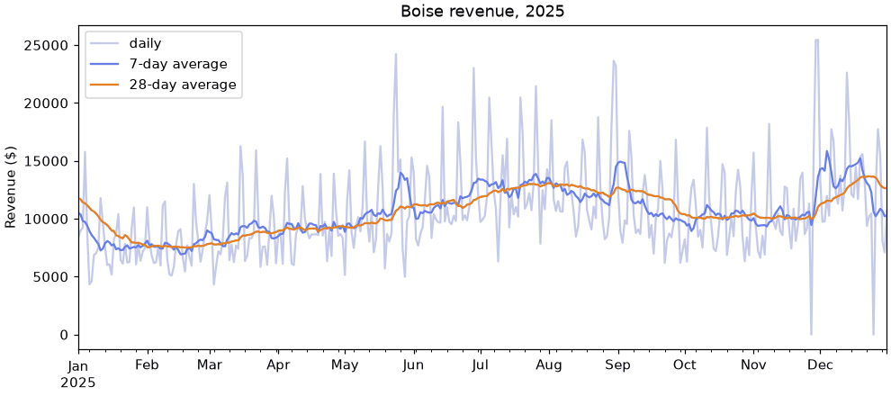

🪟 Lesson 2.8: Window Functions
Compute a statistic for every row from the rows around it: moving averages that reveal a trend, running totals, rankings, and the discipline of never letting a calculation peek at the future.
🎯 Learning Objectives
By the end of this lesson, you will be able to:
- Explain how a window calculation differs from a
groupbysummary, and choose between rolling, expanding and exponentially weighted windows - Smooth a series with
rolling(), and control the edges and gaps withmin_periods, time-based windows andcenter=True - Build running totals and year-to-date figures with
cumsum()andexpanding() - Apply windows and ranks within groups, and attach the result to the original table without misaligning it
- Recognize look-ahead leakage and write a window that uses only the past
In This Lesson
🧭 A Summary for Every Row
The daily Boise chart at the end of Lesson 2.7 was a zigzag: quiet Tuesdays, busy Saturdays, and a trend buried somewhere underneath. Monthly totals smoothed it, but at a price. 731 days became 24 numbers, and you could no longer say what was happening this week.
A window function gives you both. It computes a summary (a mean, a sum, a maximum) for every row, using only a small set of nearby rows called the window. The table keeps its length. Each row simply gains some context.
💡 Mental Model: Looking Out of a Train Window
From a train you never see the whole route at once. You see what fits in the window, and the view changes a little with every meter you travel. A rolling window is that fixed pane of glass: always the last 7 days, sliding forward one day at a time. An expanding window is a camera that started filming at the first station and never stops: everything so far. An exponentially weighted window is your memory of the trip: the last few minutes are vivid and the earlier stations fade.
How This Differs from GroupBy
groupby().agg() / resample() | Window function | |
|---|---|---|
| Rows out | One per group | One per input row |
| Each row belongs to | Exactly one group | Many overlapping windows |
| Typical question | "What was July's total?" | "What was the average of the last 7 days, on each day?" |
| Closest relative | groupby().transform(), which also returns one value per row |
🎢 Rolling Windows
Rebuild the clean daily calendar from the Lesson 2.7 project: one row per day, one column per store, holiday closures as 0 and the 11 unknown store-days as NaN.
import pandas as pd
import matplotlib.pyplot as plt
pd.set_option("display.width", 150)
pd.set_option("display.max_columns", 20)
daily = pd.read_csv("data/daily_sales.csv", parse_dates=["date"])
revenue = daily.pivot(index="date", columns="store", values="revenue")
calendar = pd.date_range(revenue.index.min(), revenue.index.max(), freq="D")
closed_days = calendar.difference(revenue.index)
revenue = revenue.asfreq("D")
revenue.loc[closed_days] = 0
boise = revenue["Boise"]
print(revenue.shape, int(revenue.isna().sum().sum()))Output
(731, 4) 11rolling(7) says "for each row, take this row and the 6 before it". On its own it computes nothing. Like groupby, it waits for you to say what to do with each window.
week_view = pd.DataFrame({"revenue": boise, "avg_7d": boise.rolling(7).mean()})
print(week_view.head(9).round(2))Output
revenue avg_7d
date
2024-01-01 5962.00 NaN
2024-01-02 6583.13 NaN
2024-01-03 3866.59 NaN
2024-01-04 7667.88 NaN
2024-01-05 9570.46 NaN
2024-01-06 12388.57 NaN
2024-01-07 9361.59 7914.32
2024-01-08 6173.31 7944.50
2024-01-09 6636.06 7952.07The first six rows are NaN: a 7-day average needs 7 days, and on January 6 only six exist. From January 7 onward every row holds the mean of itself and the six days before it. Check one by hand: the January 7 value is the mean of the first seven revenues, and on January 8 the window has slid forward, dropping January 1 and taking in January 8.
💡 Why 7?
Store revenue has a strong weekly cycle. A 7-day window always contains exactly one Monday, one Tuesday, and so on through one Sunday, so the weekly ups and downs cancel out and what remains is the level. A 5-day or 10-day window would contain different mixes of weekdays as it slides, and would wobble for that reason alone. Match the window to the cycle you want to remove. A 28-day window (four whole weeks) is smoother still.
smooth = pd.DataFrame({
"daily": boise,
"7-day average": boise.rolling(7).mean(),
"28-day average": boise.rolling(28).mean(),
}).loc["2025"]
fig, ax = plt.subplots(figsize=(9, 4), layout="constrained")
smooth.plot(ax=ax, title="Boise revenue, 2025", ylabel="Revenue ($)", xlabel="",
color=["#c5cae9", "#667eea", "#e67e22"], linewidth=1.5)
plt.show()
Because the 2025 slice was taken after the rolling calculation, the averages in January already have a full window behind them (December 2024). Compute on the whole series, then select what to show.
More Than Means
Any aggregation can follow rolling(). A rolling standard deviation measures how jumpy recent days have been. A rolling sum gives "sales in the last 7 days". A rolling maximum gives "best day in the last month".
stats = boise.rolling(28).agg(["mean", "std", "min", "max"])
stats["sum_7d"] = boise.rolling(7).sum()
print(stats.loc["2025-07-01":"2025-07-04"].round(0))Output
mean std min max sum_7d
date
2025-07-01 11874.0 3554.0 8340.0 23021.0 93593.0
2025-07-02 11918.0 3521.0 8340.0 23021.0 93653.0
2025-07-03 11953.0 3498.0 8340.0 23021.0 92897.0
2025-07-04 11965.0 3498.0 8340.0 23021.0 92167.0🧩 Edges, Gaps and min_periods
By default a window must be completely full of real values or the result is NaN. That rule produced the six empty rows at the start. It also means a single missing day knocks out every window that contains it. Boise has one blank revenue value, on December 3, 2024.
gap_view = pd.DataFrame({
"revenue": boise,
"strict": boise.rolling(7).mean(),
"min_6": boise.rolling(7, min_periods=6).mean(),
})
print(gap_view.loc["2024-12-01":"2024-12-10"].round(0))Output
revenue strict min_6
date
2024-12-01 25160.0 12895.0 12895.0
2024-12-02 16367.0 14262.0 14262.0
2024-12-03 NaN NaN 15528.0
2024-12-04 8558.0 NaN 15528.0
2024-12-05 11482.0 NaN 17442.0
2024-12-06 16251.0 NaN 17503.0
2024-12-07 18336.0 NaN 16026.0
2024-12-08 13736.0 NaN 14122.0
2024-12-09 10025.0 NaN 13065.0
2024-12-10 10822.0 12744.0 12744.0One missing day cost the strict version seven days of averages, from December 3 to December 9. min_periods=6 says "give me an answer if at least 6 of the 7 values are present". The mean is then taken over the values that exist.
⚠️ min_periods Is a Trade
A lower min_periods fills holes, and it also lets averages through that are built on less. With min_periods=1, the "7-day average" on the first day of the data is one day's revenue. And a 6-day mean no longer has every weekday in it: if the missing day is a Saturday, the average dips for a week for no real reason. Choose a threshold you can defend, such as 6 of 7 or 21 of 28, not 1.
Windows Measured in Time
On a date index you can give the window as a length of time instead of a number of rows. "7D" means "all rows within the last 7 days", however many that is.
print(boise.rolling("7D").mean().head(3).round(2))Output
date
2024-01-01 5962.00
2024-01-02 6272.56
2024-01-03 5470.57
Freq: D, Name: Boise, dtype: float64Two differences from rolling(7). A time window has min_periods=1 unless you say otherwise, so there are no NaN rows at the start (and the first few averages are built on very little). And it counts days, not rows, so it stays correct on data with missing rows, where rolling(7) would silently reach back more than a week. On a complete calendar like this one the two agree once the window is full. You did the work of completing the calendar in Lesson 2.7 precisely so that "7 rows" and "7 days" mean the same thing.
🎯 Trailing or Centered?
So far every window has been trailing: today and the days before it. A trailing average always lags a little behind the data, because it is really a summary of a period whose middle was three days ago. center=True puts the row in the middle of its window instead: three days before, the day, three days after.
both = pd.DataFrame({
"revenue": boise,
"trailing": boise.rolling(7).mean(),
"centered": boise.rolling(7, center=True).mean(),
})
print(both.loc["2025-05-21":"2025-05-27"].round(0))
print(both.tail(4).round(0))Output
revenue trailing centered
date
2025-05-21 8026.0 10324.0 12425.0
2025-05-22 8755.0 10408.0 12628.0
2025-05-23 19002.0 11292.0 13973.0
2025-05-24 24213.0 12425.0 13791.0
2025-05-25 14034.0 12628.0 13356.0
2025-05-26 15109.0 13973.0 13501.0
2025-05-27 7395.0 13791.0 12248.0
revenue trailing centered
date
2025-12-28 15555.0 10855.0 10253.0
2025-12-29 8051.0 10666.0 NaN
2025-12-30 7083.0 10221.0 NaN
2025-12-31 10680.0 10253.0 NaNMemorial Day weekend, with its sale, starts on Friday, May 23. The centered average is already climbing on May 21, before the sale has happened, because its window reaches three days into the future. It lines up beautifully with the spike on a chart. It also ends three days early: the last three rows have no future to look at, so they are NaN.
| Trailing (default) | Centered | |
|---|---|---|
| Uses | Today and the past | Past, today and future |
| Position on a chart | Lags behind turning points | Lines up with them |
| Available today? | Yes | No, not until the future days arrive |
| Use for | Monitoring, alerts, anything used to predict | Describing history after the fact |
Keep the phrase "reaches into the future" in mind. It comes back, with consequences, in Look-Ahead Leakage.
📈 Expanding Windows and Running Totals
An expanding window starts at the first row and only grows. Its most familiar form is the running total, which has its own shortcut, cumsum().
running = pd.DataFrame({
"revenue": boise,
"total_so_far": boise.cumsum(),
"avg_so_far": boise.expanding().mean(),
"best_so_far": boise.cummax(),
})
print(running.head(4).round(2))Output
revenue total_so_far avg_so_far best_so_far
date
2024-01-01 5962.00 5962.00 5962.00 5962.00
2024-01-02 6583.13 12545.13 6272.56 6583.13
2024-01-03 3866.59 16411.72 5470.57 6583.13
2024-01-04 7667.88 24079.60 6019.90 7667.88cumsum(), cummax(), cummin() and cumprod() are shortcuts for the common cases. expanding() is the general form and accepts any aggregation, such as .mean() or .std(). A neat use of cummax(): a day is a record high exactly when it equals the best so far.
records = boise[boise == boise.cummax()]
print(len(records))
print(records.tail(3))Output
12
date
2024-05-24 19117.36
2024-05-25 22093.08
2024-08-31 27677.10
Name: Boise, dtype: float64Boise set a new record 12 times, the last of them on the Saturday of Labor Day weekend 2024, and has not beaten it since.
Year to Date
A running total over two years is rarely what a business wants. "Year to date" restarts every January 1. That is a cumulative sum within each year, and you already know how to say "within each": groupby.
ytd = revenue.groupby(revenue.index.year).cumsum()
print(ytd.loc["2024-12-30":"2025-01-02"].round(0))Output
store Asheville Bend Boise Flagstaff
date
2024-12-30 2119272.0 2471460.0 3511195.0 2264827.0
2024-12-31 2123278.0 2476118.0 3518292.0 2270180.0
2025-01-01 5867.0 4477.0 8442.0 4442.0
2025-01-02 9466.0 11215.0 17411.0 9270.0The totals climb through December 31 and start again from one day's revenue on January 1. groupby(...).cumsum() returns one value per row, in the original order, so the result has the same shape as revenue.
💡 What cumsum Does with a Gap
A cumulative sum skips a NaN and carries on: the row with the missing value shows NaN, and the next row continues the total as if that day had contributed nothing. The running total is therefore a slight undercount after any gap. That is the same silent undercount you met with monthly sums in Lesson 2.7, and the same footnote applies.
⚖️ Exponentially Weighted Windows
A rolling mean treats the 7 days in its window as equals, and then forgets a day completely the moment it slides out. An exponentially weighted mean never forgets completely. It counts today most, yesterday a bit less, the day before less again, with the weights shrinking by a constant factor at each step back.
compare = pd.DataFrame({
"revenue": boise,
"rolling_7": boise.rolling(7).mean(),
"ewm_7": boise.ewm(span=7).mean(),
})
print(compare.loc["2025-05-22":"2025-05-30"].round(0))Output
revenue rolling_7 ewm_7
date
2025-05-22 8755.0 10408.0 9279.0
2025-05-23 19002.0 11292.0 11709.0
2025-05-24 24213.0 12425.0 14835.0
2025-05-25 14034.0 12628.0 14635.0
2025-05-26 15109.0 13973.0 14753.0
2025-05-27 7395.0 13791.0 12914.0
2025-05-28 4983.0 13356.0 10931.0
2025-05-29 9771.0 13501.0 10641.0
2025-05-30 10229.0 12248.0 10538.0span=7 makes the weighted mean about as smooth as a 7-day rolling mean. Watch how the two behave around the sale. When Friday's big number arrives, the weighted mean jumps further, because the newest day carries the most weight (with span=7, a quarter of the total). After the sale, it comes back down sooner for the same reason. The rolling mean stays high until the sale days slide out of its window, then drops.
| Window | Remembers | Good for |
|---|---|---|
rolling(n) | The last n rows, equally | Removing a known cycle (7 days); easy to explain to anyone |
expanding() | Everything, equally | Running totals, year to date, records, "average so far" |
ewm(span=n) | Everything, recent rows more | Tracking a level that drifts; reacting quickly to change |
A weighted mean does not have the neat "one of each weekday" property, so on data with a weekly cycle it keeps a little of the zigzag. For store revenue, the 7-day rolling mean is the cleaner smoother. Weighted means earn their place on series without a strong cycle, such as a product's price or a sensor reading.
👥 Windows Within Groups
The wide table made per-store windows free: each column is one store, and revenue.rolling(7).mean() handles them separately. Much real data stays long, though, with several groups stacked in one column. Then a plain rolling window is a trap.
print(daily[["date", "store", "revenue"]].head(8))
print(daily["revenue"].rolling(4).mean().head(8).round(2))Output
date store revenue
0 2024-01-01 Asheville 5017.07
1 2024-01-01 Bend 4132.92
2 2024-01-01 Boise 5962.00
3 2024-01-01 Flagstaff 3061.66
4 2024-01-02 Asheville 3605.81
5 2024-01-02 Bend 3675.57
6 2024-01-02 Boise 6583.13
7 2024-01-02 Flagstaff 3575.24
0 NaN
1 NaN
2 NaN
3 4543.41
4 4190.60
5 4076.26
6 4231.54
7 4359.94
Name: revenue, dtype: float64The file is sorted by date and then store, so consecutive rows are different stores on the same day. That "4-row rolling mean" is the average of Asheville, Bend, Boise and Flagstaff, then of Bend, Boise, Flagstaff and the next day's Asheville. It is a number, it has no error, and it means nothing.
The fix has two parts: sort so that each store's days are in order, and compute the window inside each store. groupby with transform, which you met in Lesson 2.4, does exactly this and hands back a result lined up with the original rows.
long = daily.sort_values(["store", "date"]).copy()
long["avg_7d"] = long.groupby("store")["revenue"].transform(lambda s: s.rolling(7).mean())
print(long.loc[long["store"] == "Bend", ["date", "store", "revenue", "avg_7d"]].head(8).round({"avg_7d": 2}))Output
date store revenue avg_7d
1 2024-01-01 Bend 4132.92 NaN
5 2024-01-02 Bend 3675.57 NaN
9 2024-01-03 Bend 6275.05 NaN
13 2024-01-04 Bend 5487.11 NaN
17 2024-01-05 Bend 4755.15 NaN
21 2024-01-06 Bend 7083.36 NaN
25 2024-01-07 Bend 6719.33 5446.93
29 2024-01-08 Bend 5111.35 5586.70Bend's first six days are NaN: its window started fresh and did not borrow the end of Asheville's data. The same pattern works for any per-group window: s.shift(1) for "the previous row of this group", s.diff() for the change, s.expanding().mean() for the group's average so far. Common cumulative operations are built in, without a lambda:
long["day_number"] = long.groupby("store").cumcount() + 1 # 1, 2, 3 ... within each store
long["revenue_to_date"] = long.groupby("store")["revenue"].cumsum()
print(long.loc[long["store"] == "Flagstaff", ["date", "revenue", "day_number", "revenue_to_date"]].head(3))Output
date revenue day_number revenue_to_date
3 2024-01-01 3061.66 1 3061.66
7 2024-01-02 3575.24 2 6636.90
11 2024-01-03 3974.93 3 10611.83✅ Sort, Group, Window
Window functions trust the row order completely. Before any window on a long table, ask two questions: "Is it sorted by time within each group?" and "Did I group?" If you remember only one thing from this section, remember that the order of the rows is part of the calculation.
Keep in mind that this long table still has the 21 missing store-day rows, so here 7 rows is occasionally more than 7 days. When that matters, compute on the completed wide calendar, as the project does.
🏅 Ranking
A rank replaces each value with its position in the sorted order. It answers "where does this row stand?" without your having to sort the table.
july4 = daily.loc[daily["date"] == "2025-07-04", ["store", "revenue"]].copy()
july4["rank"] = july4["revenue"].rank(ascending=False)
print(july4)Output
store revenue rank
2187 Asheville 6851.90 4.0
2188 Bend 9000.13 3.0
2189 Boise 11957.68 1.0
2190 Flagstaff 9937.66 2.0By default rank 1 goes to the smallest value. ascending=False gives rank 1 to the largest, which is what "first place" usually means. Ties need a rule, and method= chooses it.
scores = pd.Series([50, 80, 80, 95, 60])
print(pd.DataFrame({
"score": scores,
"average": scores.rank(),
"min": scores.rank(method="min"),
"dense": scores.rank(method="dense"),
"first": scores.rank(method="first"),
"pct": scores.rank(pct=True),
}))Output
score average min dense first pct
0 50 1.0 1.0 1.0 1.0 0.2
1 80 3.5 3.0 3.0 3.0 0.7
2 80 3.5 3.0 3.0 4.0 0.7
3 95 5.0 5.0 4.0 5.0 1.0
4 60 2.0 2.0 2.0 2.0 0.4"average"(the default) gives tied values the mean of the positions they occupy: 3.5 and 3.5."min"is sports ranking: both get 3, and the next value gets 5."dense"also gives both 3, and leaves no gap: the next value gets 4."first"breaks ties by order of appearance, so every rank is unique.pct=Truerescales ranks to between 0 and 1: a percentile.
Ranking Within Groups
Ranks become really useful inside a group. Rank the four stores against each other on every day, then count how often each store came first, second, third and fourth.
daily["rank_in_day"] = daily.groupby("date")["revenue"].rank(ascending=False, method="min")
print(pd.crosstab(daily["store"], daily["rank_in_day"]))Output
rank_in_day 1.0 2.0 3.0 4.0
store
Asheville 11 90 172 453
Bend 37 315 272 97
Boise 646 56 22 2
Flagstaff 33 266 261 164Boise won 646 of 726 days. Asheville came last on 453. (The six days with missing revenue get no rank, so they drop out of the count.) Grouping the other way ranks each day within its own store, and pct=True turns that into "how good was this day, for this store?"
daily["pct_in_store"] = daily.groupby("store")["revenue"].rank(pct=True).round(3)
print(daily.loc[daily["date"] == "2025-07-04", ["store", "revenue", "rank_in_day", "pct_in_store"]])Output
store revenue rank_in_day pct_in_store
2187 Asheville 6851.90 4.0 0.771
2188 Bend 9000.13 3.0 0.813
2189 Boise 11957.68 1.0 0.755
2190 Flagstaff 9937.66 2.0 0.884Asheville was last of the four on July 4, 2025, yet for Asheville it was a good day, better than about three quarters of its own days. Rank within the right group and the same number tells a fairer story. A filter on a group rank also gives "top N per group" in one line: daily[daily["rank_in_day"] <= 2] keeps the two best stores of every day.
🚨 Look-Ahead Leakage
Here is the most important idea in this lesson, and one of the most important in the course. Suppose you want to predict a day's revenue, or decide whether a day was unusual. A natural baseline is "the recent average". But which rows may that average use?
leak = pd.DataFrame({
"revenue": boise,
"avg7_with_today": boise.rolling(7).mean(),
"avg7_before_today": boise.shift(1).rolling(7).mean(),
})
print(leak.loc["2025-05-21":"2025-05-25"].round(0))Output
revenue avg7_with_today avg7_before_today
date
2025-05-21 8026.0 10324.0 10192.0
2025-05-22 8755.0 10408.0 10324.0
2025-05-23 19002.0 11292.0 10408.0
2025-05-24 24213.0 12425.0 11292.0
2025-05-25 14034.0 12628.0 12425.0Look at Friday, May 23, the first day of the sale. avg7_with_today has already risen, because the day you are trying to judge is inside its own baseline. avg7_before_today shifts the series down one row first, so the window for May 23 covers May 16 to May 22: only what was known when the doors opened.
🛑 Leakage
Look-ahead leakage is using information in a calculation that would not have been available at the moment the calculation is supposed to describe. A feature that leaks makes a forecast look accurate in testing and then fail in real use, because in real use the future is not in the table yet. It never raises an error. The only defense is to ask, for every window: "On that day, could I have known every number in it?"
How much does it flatter the results? Pretend each candidate below is a forecast of the day's revenue, and measure the average miss in dollars.
candidates = {
"3-day avg, centered (leaks)": boise.rolling(3, center=True).mean(),
"3-day avg, with today (leaks)": boise.rolling(3).mean(),
"3-day avg, before today": boise.shift(1).rolling(3).mean(),
"7-day avg, before today": boise.shift(1).rolling(7).mean(),
"same weekday last week": boise.shift(7),
}
for name, guess in candidates.items():
print(f"{name:<30} average miss ${(boise - guess).abs().mean():>6,.0f}")Output
3-day avg, centered (leaks) average miss $ 1,417
3-day avg, with today (leaks) average miss $ 2,012
3-day avg, before today average miss $ 3,132
7-day avg, before today average miss $ 2,504
same weekday last week average miss $ 2,158The two leaking versions "predict" far better than the honest 3-day average, for the simple reason that the answer is one third of each of them. If you had tested these as forecasts without thinking, you would have picked the centered average and it would have been useless, since tomorrow's revenue is not available today. Among the honest candidates, the simplest idea of all wins: the same weekday last week. Knowing your data's weekly rhythm beat a fancier calculation.
💡 Three Ways to Keep a Window in the Past
s.shift(1).rolling(7).mean(): shift first, then roll. The clearest to read.s.rolling(7, closed="left").mean(): the same result, by telling the window to leave out its newest row.- Never
center=True, and never a statistic of the whole column (such as the overall mean), in anything used to predict or to flag.
⚠️ Common Mistakes
Two of these announce themselves with an error. The other three are silent, which is why they get more space in this lesson than the syntax did.
1. A Time Window on an Index That Is Not Dates
daily["revenue"].rolling("7D").mean()Error
ValueError: window must be an integer 0 or greaterWhat it means: "7D" only makes sense when the index is dates. daily has a plain 0, 1, 2 index, so pandas expected a whole number of rows and got text. Fix: set a date index first, or pass on="date" to rolling on a DataFrame. (On this table you would also need to group by store.)
2. Assigning a Grouped Rolling Result Straight Back
grouped_roll = long.groupby("store")["revenue"].rolling(7).mean()
print(grouped_roll.index.names)
long["avg_7d_again"] = grouped_rollError
['store', None]
TypeError: incompatible index of inserted column with frame indexWhat it means: groupby(...).rolling(...) returns its result with a two-level index (the store, then the original row label), which does not match the table's single-level index. Fix: use the transform form from this lesson, which keeps the original index, or drop the extra level: grouped_roll.reset_index(level=0, drop=True).
3. Rolling Across Groups
You saw daily["revenue"].rolling(4).mean() average four different stores together. No error. Fix: sort, then group, then window. A quick test for any per-group window: the first rows of each group should be NaN. If only the very top of the table is, the window is running across groups.
4. One NaN Erasing a Week
A single missing value blanks every window that contains it, as on December 3 to 9. Fix: a deliberate min_periods, slightly below the window size. Do not reach for min_periods=1 just to make the NaNs go away.
5. A Baseline That Contains the Thing It Judges
boise.rolling(7).mean() includes today. Comparing today with it understates every spike and every drop. A centered window is worse. Fix: shift(1) before the window whenever the result is used to predict, flag or score the current row.
🛠️ Project: The Sale-Day Detector
Pinecrest ran six sale weekends in two years, 24 days, at all four stores: 96 promoted store-days. Imagine nobody had told you when. Could you find them from revenue alone? You will build a detector that flags any store-day far above its recent normal, then score it against the real promotion calendar. It will do poorly at first, and the reason why is the point of the project. Work in a new notebook called lesson_2_8_project. Allow about 35 minutes.
🛠️ Step 1: Clean calendar and answer key (5 min)
Build the daily revenue table as before, and a matching table of the promotion flags to check against later. promo_day has no value on the days with no row, so fill those with 0.
import pandas as pd
daily = pd.read_csv("data/daily_sales.csv", parse_dates=["date"])
revenue = daily.pivot(index="date", columns="store", values="revenue")
calendar = pd.date_range(revenue.index.min(), revenue.index.max(), freq="D")
closed_days = calendar.difference(revenue.index)
revenue = revenue.asfreq("D")
revenue.loc[closed_days] = 0
promo = daily.pivot(index="date", columns="store", values="promo_day").asfreq("D").fillna(0).astype(bool)
print(revenue.shape, promo.shape)
print(promo.sum())Output
(731, 4) (731, 4)
store
Asheville 24
Bend 24
Boise 24
Flagstaff 24
dtype: int64🛠️ Step 2: A first baseline (5 min)
"Normal" for a store-day is the average of the 28 days before it. Shift first so the day is not in its own baseline, and require at least 21 real values. Flag any day that reaches 1.5 times its baseline.
baseline = revenue.shift(1).rolling(28, min_periods=21).mean()
lift = revenue / baseline
flags = lift >= 1.5
print(lift.loc["2025-05-22":"2025-05-24"].round(2))
print(flags.sum())
print(int(flags.sum().sum()), "store-days flagged")Output
store Asheville Bend Boise Flagstaff
date
2025-05-22 0.80 0.84 0.88 0.96
2025-05-23 1.62 1.48 1.92 1.73
2025-05-24 2.93 2.19 2.34 2.51
store
Asheville 66
Bend 62
Boise 66
Flagstaff 66
dtype: int64
260 store-days flaggedThe sale days light up as expected. But 260 flags for 96 promoted store-days is far too many.
🛠️ Step 3: Score it (5 min)
Write a small function that compares any table of flags with the answer key. Two numbers matter: of the days flagged, how many were really promotions (are the alarms trustworthy?), and of the real promotions, how many were caught?
def score(flags, promo):
hits = int((flags & promo).sum().sum())
flagged = int(flags.sum().sum())
actual = int(promo.sum().sum())
print(f"flagged {flagged}, of which real promotions {hits} ({hits / flagged:.0%})")
print(f"promotions caught {hits} of {actual} ({hits / actual:.0%})")
score(flags, promo)Output
flagged 260, of which real promotions 66 (25%)
promotions caught 66 of 96 (69%)Three alarms in four are false. Before changing anything, look at which days are being flagged wrongly. stack() turns each True/False grid into a long Series, as in Lesson 2.6.
false_alarms = (flags & ~promo).stack()
false_alarms = false_alarms[false_alarms].reset_index()
print(false_alarms["date"].dt.day_name().value_counts())Output
date
Saturday 151
Sunday 38
Friday 4
Thursday 1
Name: count, dtype: int64Almost all of them are Saturdays and Sundays. The detector has discovered the weekend. A 28-day average blends quiet Tuesdays with busy Saturdays, so every ordinary Saturday looks "far above normal". The baseline is comparing unlike things.
🛠️ Step 4: Compare like with like (10 min)
A fair baseline for a Saturday is recent Saturdays. Group the rows by day of the week, and inside each group take the mean of the previous 4 values: a per-group window with a shift, exactly the pattern from Windows Within Groups. Allow 3 of 4 so a single gap does not blank a month.
weekday_baseline = revenue.groupby(revenue.index.dayofweek).transform(
lambda s: s.shift(1).rolling(4, min_periods=3).mean())
check = pd.DataFrame({"revenue": revenue["Boise"], "baseline": weekday_baseline["Boise"]})
print(check.loc[["2025-05-03", "2025-05-10", "2025-05-17", "2025-05-24", "2025-05-31"]].round(0))
lift = revenue / weekday_baseline
flags = lift >= 1.5
score(flags, promo)Output
revenue baseline
date
2025-05-03 14184.0 12627.0
2025-05-10 16671.0 12371.0
2025-05-17 16277.0 13334.0
2025-05-24 24213.0 15257.0
2025-05-31 15287.0 17836.0
flagged 142, of which real promotions 72 (51%)
promotions caught 72 of 96 (75%)Those five dates are consecutive Saturdays. The baseline on May 24 is the mean of the four Saturdays before it and does not include May 24 itself. The flags dropped by almost half, more real promotions were caught, and now about half of all alarms are genuine instead of a quarter. One better idea about what "normal" means did more than any amount of threshold tuning would have.
🛠️ Step 5: Report and save (10 min)
Summarize by store, list the strongest days, and save the flags in tidy form.
report = pd.DataFrame({
"flagged": flags.sum(),
"real_promos_caught": (flags & promo).sum(),
"promos_missed": (~flags & promo).sum(),
})
print(report)
result = pd.DataFrame({
"revenue": revenue.stack(),
"baseline": weekday_baseline.stack().round(2),
"lift": lift.stack().round(2),
"flag": flags.stack(),
"promo_day": promo.stack(),
}).reset_index()
result.to_csv("sale_day_flags.csv", index=False)
print(result.shape)
print(result.sort_values("lift", ascending=False).head(5))Output
flagged real_promos_caught promos_missed
store
Asheville 44 19 5
Bend 34 17 7
Boise 29 18 6
Flagstaff 35 18 6
(2924, 7)
date store revenue baseline lift flag promo_day
2871 2025-12-18 Flagstaff 12306.29 4169.22 2.95 True False
1345 2024-12-02 Bend 12351.47 4877.24 2.53 True True
1342 2024-12-01 Boise 25160.28 10145.89 2.48 True True
1333 2024-11-29 Bend 13840.72 5901.10 2.35 True True
1346 2024-12-02 Boise 16366.74 6998.18 2.34 True TrueLook at the top row of that list. The highest lift in two years is a Flagstaff Thursday in December that was not a promotion, measured against a baseline of only $4,169. A baseline that low for a December Thursday should make you suspicious, and the bonus challenge asks you to work out what went wrong. Write two or three sentences under your table: what the detector does, how well it does it, and one thing it gets wrong. The misses and the remaining false alarms are not failures. They are the next questions, and the bonus challenge picks one of them up.
✅ Project Completion Checklist
revenueandpromoare both 731 × 4, andpromohas 24 True days per store- Both baselines use
shift(1)before the window, so no day is part of its own baseline - Your first detector flagged 260 store-days, and you found that most false alarms were weekends
- Your weekday baseline for a Saturday is the mean of the previous Saturdays only
- The second detector's score improved on both measures, and you can state both in a sentence
sale_day_flags.csvhas 2,924 rows (731 days × 4 stores) and 7 columns
🏋️ Hands-on Exercises
These use revenue (the clean daily table) and boise from the lesson.
🏋️ Exercise 1: The Best Week
Using a 7-day rolling sum, find Asheville's best 7 consecutive days in the two years. On what date did that stretch end, and how much revenue did it bring in? What was going on?
💡 Hint
revenue["Asheville"].rolling(7).sum() gives, for each day, the total of the 7 days ending on it. idxmax() finds the date of the largest.
✅ Solution
ash_week = revenue["Asheville"].rolling(7).sum()
end = ash_week.idxmax()
print(end.date(), end.day_name(), round(ash_week.max(), 2))
print(revenue.loc[end - pd.Timedelta(days=6):end, "Asheville"])Output
2025-05-29 Thursday 60530.9
date
2025-05-23 8898.76
2025-05-24 16558.00
2025-05-25 12533.19
2025-05-26 7158.57
2025-05-27 5108.94
2025-05-28 4450.92
2025-05-29 5822.52
Freq: D, Name: Asheville, dtype: float64The best seven days ended on Thursday, May 29, 2025, so they ran from Friday, May 23: the whole Memorial Day sale weekend plus the days after it. Unlike a calendar week from resample("W"), a rolling sum finds the best stretch wherever it starts.
🏋️ Exercise 2: Passing Last Year
Compute year-to-date revenue for every store. On what date in 2025 did each store's year-to-date total pass its full-year 2024 total? Which store never got there?
💡 Hint
revenue.groupby(revenue.index.year).cumsum() is the year-to-date table. For each store, filter the 2025 rows to those greater than the 2024 total and take the first index label. Expect one store to have no such row.
✅ Solution
ytd = revenue.groupby(revenue.index.year).cumsum()
total_2024 = revenue.loc["2024"].sum()
for store in revenue.columns:
ahead = ytd.loc["2025", store]
ahead = ahead[ahead > total_2024[store]]
print(f"{store:<10}", ahead.index[0].date() if len(ahead) else "did not pass 2024")Output
Asheville did not pass 2024
Bend 2025-12-19
Boise 2025-12-06
Flagstaff 2025-11-11Flagstaff matched all of 2024 with seven weeks of the year to spare. Asheville never did, which is the -5.0% from Lesson 2.7 seen another way.
🏋️ Exercise 3: Each Customer's Timeline
Load data/orders.csv with parsed dates. For every order, add three columns computed within each customer: order_number (1 for their first order in the data, 2 for the second, and so on), days_since_prev (days since that customer's previous order) and spend_to_date (running total of order_total, including this order). What is the median gap between a customer's orders?
💡 Hint
Sort by customer_id and order_date first. Then groupby("customer_id") with cumcount(), ["order_date"].diff() and ["order_total"].cumsum(). A difference of dates is a Timedelta column: .dt.days turns it into numbers.
✅ Solution
orders = pd.read_csv("data/orders.csv", parse_dates=["order_date"])
orders = orders.sort_values(["customer_id", "order_date", "order_id"])
by_customer = orders.groupby("customer_id")
orders["order_number"] = by_customer.cumcount() + 1
orders["days_since_prev"] = by_customer["order_date"].diff().dt.days
orders["spend_to_date"] = by_customer["order_total"].cumsum()
cols = ["customer_id", "order_date", "order_total", "order_number", "days_since_prev", "spend_to_date"]
print(orders[cols].head(4))
print(orders["days_since_prev"].median())
print(int(orders["days_since_prev"].isna().sum()))Output
customer_id order_date order_total order_number days_since_prev spend_to_date
1554 10001 2024-03-17 325.20 1 NaN 325.20
2899 10001 2024-05-09 51.90 2 53.0 377.10
4765 10001 2024-07-15 142.75 3 67.0 519.85
6918 10001 2024-10-02 41.90 4 79.0 561.75
52.0
3942Half of all repeat orders come within 52 days of the previous one. The 3,942 NaN gaps are first orders, one per buyer: there is no previous order to measure from. Every one of these columns uses only the customer's past, so they are leak-free. You will build features just like these in the next lesson.
🏋️ Exercise 4: Which Smoother Forecasts Best? (Stretch)
Treat each of these as a forecast of Boise's revenue for the day, made the night before, and compute its average absolute miss: a 7-day rolling mean, a 28-day rolling mean, an exponentially weighted mean with span=7, and the mean of the same weekday in the previous 4 weeks. Make every one of them leak-free. Which wins, and why do you think so?
💡 Hint
For the first three, compute the smoother and then shift(1) (or shift before rolling: the result is the same). For the last, group by boise.index.dayofweek and use transform with s.shift(1).rolling(4).mean().
✅ Solution
forecasts = {
"rolling 7": boise.shift(1).rolling(7).mean(),
"rolling 28": boise.shift(1).rolling(28).mean(),
"ewm span 7": boise.ewm(span=7).mean().shift(1),
"same weekday, 4 weeks": boise.groupby(boise.index.dayofweek).transform(
lambda s: s.shift(1).rolling(4).mean()),
}
for name, guess in forecasts.items():
print(f"{name:<22} average miss ${(boise - guess).abs().mean():>6,.0f}")Output
rolling 7 average miss $ 2,504
rolling 28 average miss $ 2,500
ewm span 7 average miss $ 2,642
same weekday, 4 weeks average miss $ 1,878The three general-purpose smoothers land within about $150 of each other. The weekday-aware average beats them all by a wide margin, because the weekly cycle is the biggest predictable thing in this series and it is the only forecast that uses it. Tools matter less than knowing the shape of your data.
🎯 Quick Quiz
🎯 Check Your Understanding
Question 1: A Series has 100 daily values and no missing data. How many NaN values does s.rolling(7).mean() contain, and where?
Question 2: What does this print?
quiz_s = pd.Series([1, 2, 3, 4])
print(quiz_s.rolling(2).sum().tolist())Question 3: A long table has columns store, date, revenue and is sorted by date, then store. You run df["avg"] = df["revenue"].rolling(7).mean(). What is in avg?
Question 4: You want a feature to help predict today's revenue, computed each morning before the store opens. Which is safe from look-ahead leakage?
Question 5: What does this print?
quiz_r = pd.Series([50, 80, 80, 95])
print(quiz_r.rank(ascending=False, method="min").tolist())❓ Common Questions at This Stage
How do I choose the window size?
Start from the cycle in the data: 7 for daily data with a weekly pattern, 12 for monthly data with a yearly one. Beyond that it is a trade between smoothness and speed: a longer window is calmer and slower to show a real change. Plot two or three sizes on the same chart, as you did with 7 and 28, and pick the one that answers the question you are asking. There is no single correct number, and saying which window you used is part of reporting the result.
What is the difference between resample("W").mean() and rolling(7).mean()?
resample cuts the calendar into separate weeks and returns one row per week: 105 rows for two years. rolling slides one day at a time and returns one row per day: 731 rows, where each value overlaps six sevenths with its neighbor. Use resample for a report by week, and rolling for a smooth line or a per-day baseline.
What do span, alpha and adjust mean in ewm?
alpha is the weight given to the newest value, between 0 and 1. span is a friendlier way to set it, alpha = 2 / (span + 1), chosen so that span=7 smooths about as much as a 7-row rolling mean. adjust only affects the first few rows, where there is little history: the default (True) rescales the weights so early values are proper weighted averages. For long series you can ignore it.
Are these the same "window functions" that SQL has?
Yes, the same idea with different spelling. SQL's AVG(revenue) OVER (PARTITION BY store ORDER BY date ROWS BETWEEN 6 PRECEDING AND CURRENT ROW) is groupby("store") plus rolling(7).mean() on sorted rows, and RANK() OVER (PARTITION BY ...) is groupby(...).rank(method="min"). Lesson 5.3 covers the SQL versions, and what you learned today will transfer directly.
🌟 Going Further: Bonus Challenge
Your detector still raises about 70 false alarms. Print their weekday counts as you did in Step 3. One weekday now stands out. Look at which dates those are and what happened on the same weekday in the weeks just before them (hint: you filled something with 0 in Step 1). Then fix the baseline so that closed days are ignored instead of counted as $0 days, rescore, and write down how many false alarms disappeared. Finally, ask the harder question: some of the remaining "false" alarms may be real events that simply were not company promotions. How would you find out?
📓 Learning Journal
Take five minutes to write in your learning journal (the journal.md file you started in Lesson 0.1, or a paper notebook). Jot down:
- Key concepts you learned today
- Techniques that clicked (and the ones that have not, yet)
- Questions or confusion to come back to
- Ideas to try on your own
- Progress and feelings: how did this lesson go for you?
✍️ This lesson's prompt: Explain look-ahead leakage to a friend using an example that has nothing to do with data (a quiz, a weather forecast, a sports bet). Then describe one number you see regularly that is probably a rolling average, a running total or a rank (a fitness app, a bank statement, a leaderboard), and say which kind of window you think is behind it.
📝 Lesson Summary
🎓 Key Takeaways
- A window function returns one value per row, computed from nearby rows;
groupby().agg()returns one per group rolling(n)is a fixed sliding window. Match n to the cycle you want to remove (7 for a weekly pattern)- A window must be full by default: the first n - 1 rows are
NaN, and one missing value blanks n results.min_periodsrelaxes that, at a cost center=Truealigns a smoother with the data by using future rows: fine for describing history, never for predictingcumsum(),cummax()andexpanding()accumulate from the start;groupby(year).cumsum()gives year to dateewm(span=n)weights recent rows more and reacts faster to change- On long data: sort, group, window.
groupby().transform(lambda s: s.rolling(...))keeps the result aligned rank()gives positions;methodsettles ties,pct=Truegives percentiles, andgroupby().rank()ranks within groups- Leakage: a baseline must not contain the row it judges or anything after it.
shift(1)first
🏆 What You've Accomplished
- You smoothed two years of jagged daily revenue into a readable trend at two levels of detail
- You built running totals, year-to-date figures and a list of record days
- You ranked stores within days and days within stores, and saw how the group changes the story
- You measured how much a leaking feature flatters a forecast, and learned three ways to prevent it
- You built a detector, found out why it was wrong, and nearly doubled its precision with one better idea
🔭 Looking Ahead
In Lesson 2.9: Feature Engineering Basics, the last lesson of the pandas module, you will pull everything together. Derived columns, date parts, bins, categories, per-customer aggregates and window calculations all become features: columns built so that a pattern is easy to see, for a person or for a model. Leakage comes with you, because it matters even more there.
📋 Before the Next Lesson
- Keep
sale_day_flags.csvand your project notebook. - Do Exercise 3 if you skipped it. The per-customer columns it builds are a preview of Lesson 2.9.
- Look at
data/customers.csvand list three new columns you could compute for each customer that might help predict whether they will order again.
🌱 Encouragement for the Journey
Your first detector was wrong three times out of four, and that was the best thing that happened in this lesson. You did not shrug and tune a threshold. You looked at what it was getting wrong, understood why, and fixed the idea underneath. That loop of build, score, inspect the errors, improve is what real analytical work looks like. Rolling and ranking syntax you can always look up. The habit of asking "could I have known this number on that day?" is yours now, and many people who have worked with data for years have never learned to ask it.